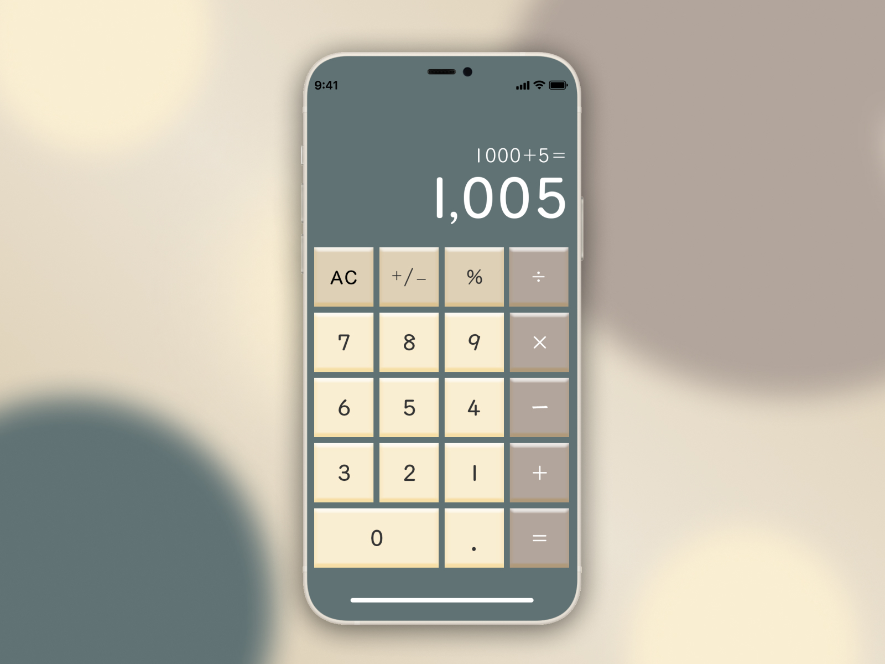

Calculator -Daily UI-
Prompt
Design a calculation element or interface.
GOAL
FFound the existing calculator on smartphones easy to use, but it lacked a modern design. Therefore, I designed a slightly retro calculator to not only be user-friendly but also bring a sense of enjoyment for young users who appreciate a more nostalgic touch.
Details
- Color Settings:
- Selected retro and vintage colors, considering both the color of the calculator body and user usability. To enhance user-friendliness, I varied the colors based on button types. I opted for a set of three colors for the buttons that are similar in hue, as having vastly different colors might distract the user and make it less user-friendly.